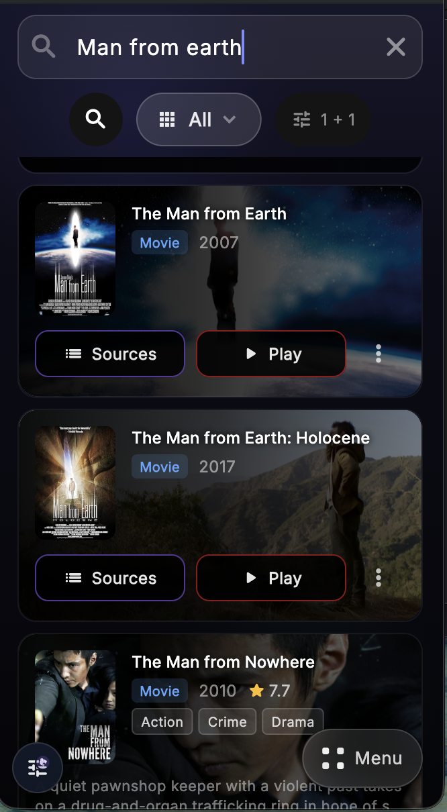
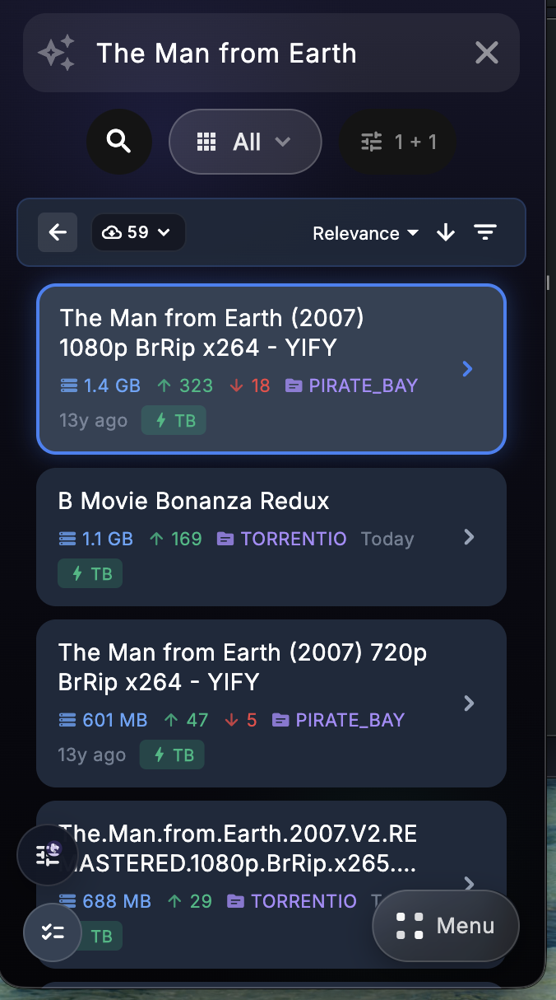
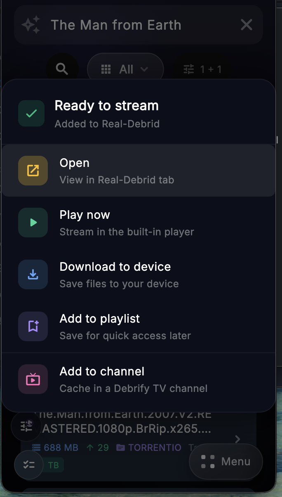

Movie Search Flow
Use catalog search when you want Debrify to find the title first, then decide how you want to open it.
1
Search for the movie
Enter the movie name in catalog search. Debrify shows matching title cards with quick actions on each result.
Sources
Play
More menu

Catalog results for a movie search
2
If you tap Play
Debrify automatically picks a source for the movie and starts playback. This is the fastest path when you do not want to choose a source manually.
Automatic source selection
Starts playback
Use Play for the quickest route into the movie
3
If you tap Sources
Debrify opens the source list for that movie. From there, you can sort, filter, and choose the source you want.
Sort results
Filter results
Pick source manually

Manual source selection for the chosen movie
4
After selecting a source
Once the source is selected and added, Debrify shows the available actions for that movie.
Open
Play now
Download to device
Add to playlist
Add to channel

Actions shown after the movie source is ready
In short
For movies in catalog search, use Play if you want Debrify to pick a source automatically. Use Sources if you want to choose the source yourself.